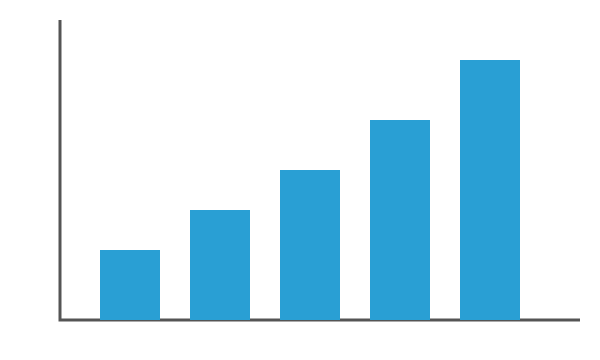

שם הלומדה
שאלת החקר של הלומדה
משפט הסבר שבו מופיע שהלומדים עוד לא מכירים.
וכך נראה שבר בתוך הטקסט: 34 מהשטח.

שאלה 1
נוסח השאלה מופיע כאן?
סמנו את התשובה הנכונה.
זו אינה התשובה.
רמז שמכוון את הלומדים בחזרה לתרשים.
צדקת!
הסבר שמופיע אחרי תשובה נכונה.
זו טעות, כל הכבוד על הניסיון.
הסבר שמופיע אחרי שתי טעויות.
שאלה 2
נוסח שאלה עם כמה תשובות נכונות?
סמנו את כל התשובות הנכונות.
זו אינה התשובה, נסו שוב.
אתם בכיוון הנכון! יש תשובות נכונות נוספות.
צדקת!
הסבר משותף לכל התוצאות.
זו תשובה חלקית.
הסבר משותף לכל התוצאות.
זו טעות, כל הכבוד על הניסיון.
הסבר משותף לכל התוצאות.
שאלה 3
השלימו את המילים החסרות בקטע באמצעות גרירת מילים מהמחסן.
משפט ראשון עם באמצע, ומשפט שני עם ועוד .
נסו שוב! חלק מהמילים לא במקום.
צדקת!
התשובה הנכונה מופיעה כעת על המסך.
נכון חלקית.
התשובה הנכונה מופיעה כעת על המסך.
זו טעות, כל הכבוד על הניסיון.
התשובה הנכונה מופיעה כעת על המסך.
כל הכבוד, המשימה הושלמה!
הציון שלך הוא 0
יש לסגור את המשימה בלחיצה על X
כעת חזרו אל המודל,
לחצו על הכפתור "העמוד הבא"
וענו על השאלות.